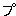

| アイヌ語のおもしろさ | |
| 知里 真志保 | |
| 青空文庫 (2015) | |
アイヌ語のおもしろさ
知里真志保
アイヌ語やアイヌ文学を扱っていると、われわれの予想もしなかったような考え方にぶつかって戸惑いするのは毎度のことである。
例えば氷をアイヌ語では「ル
」（ru-p）と言う。「とける・もの」ということである。日本語の「コオリ」という語は「氷るもの」という意味であったと思われるから、さし示す対象は同じでも、ことばの裏の考え方には根本的なくいちがいがある。
アイヌ語に、「エネア・レカ・イ カ イサム」（ene a-reka-ika isam）という表現がある。直訳すれば、「どう われら・褒め・よう も ない」ということで、「褒めようもない」から「くさす」という意味にもなりかねない。しかしこのアイヌ語の真意は、「それ以上ほめようとしても、ほめるキッカケがない」ということで、完全無欠を意味する慣用句なのである。
また「ミナ・コヤイクス」（mina-koyaykus）という表現がある。直訳すれば「笑うことが・できない」ということである。「笑うことができない」ならば、「笑わないでムッツリとしている」のかと思えば、事実は「腹を抱えて笑う」ことである。「これ以上笑いたくても笑えない」というのが、このアイヌ語の真意である。
古くアイヌは、自分たちをとりまく森羅万象を、自分たちと同様の生き物と考えていた。例えば風であるが、それはわれわれにとってこそ単なる空気の動きにすぎないのであるが、彼らにとってはそれは一個のれっきといた［＃「れっきといた」はママ］
生き物であった。またある地方では、風が吹き荒れると、戸外に草刈鎌を立てて、「風の神よ、あんまり暴れると、あんたの奥さんのズロースが切れますぜ」などと唱えた。風が女房を連れて暴れまわっているという考え方なのである。風が終日吹き荒れていたのが、夕方になってハタと吹きとだえることがある。そういう夕なぎのことを、「レラ オヌマン イペ」（風が夕方に食事する）という。風も人間同様に夕食をとり帰宅するという考え方である。
アイヌに古くから伝承されているユーカラ（詞曲）の中に大風が吹きすさぶ場面がよく出てくる。例えば、烈しい風が森を襲うと、大地は轟々と鳴りわたり、森の木々はヒュウヒュウと鳴り続ける、そして折れやすい木は幹のまん中からポッキポッキと折れくだけ、折れにくい木はしなやかな小枝のように撓み伏し、また弾きかえす、風が野原に吹いてくると、忽ちそこに生えている青草を根こそぎ吹き上げて、宙にまきちらしてしまう。――というような場面であるが、それを原語の気持を生かして訳出してみると、怒れる風が森を襲って木々を投擲する、すると、木々が悲鳴を挙げて泣き叫ぶ、そして木々のうち、烈しい責め折檻にたえかねて折れたくなった者は自分の意志で幹のなかばから折れていき、あくまでも折れるものかと思う者は、風が襲いかかると見れば大地に身を伏せてそれをやりすごし、風が行きすぎるとまた立ちあがる、というのである。それに続く文章も従来は風が野原へ吹いてくると、「たちまち生えたる青草を根こそぎに大風が吹き上げて、まっ黒な雲となりて大空へ吹き上りたり」などと訳されたのであるが、「生えたる青草」とあるのは「座っている草」とするのが正しく、木々は立っているから立木なのだが、草は野原いちめんにあぐらをかいて座っている、そこへ怒れる風が襲いかかり、「あぐらをかいて座っている草たちの股ぐらに手をかけて持ち上げ、真黒な雲となって大空へ上って行った」というのであって、そこでは風も、木も、草ももはや単なる非情ではなく、人間と同様の感情をもち人間と同様に行動する動物である。嵐の場面はそれらの動物の間に繰りかえされる死闘として描かれているのである。
川などもやはり動物である。動物であるから、それは肉体をもち、例えば上流を「川の頭」、中流を「川の胸」、曲り角を「川の肘」、川の流れが幾重にも屈曲して流れている部分を「川の小腸」などと呼ぶのである。また、われわれの考え方からすれば、川は山から発して海に入るものであるが、アイヌの古い考え方に従えば、それは海から上陸して山へ登って行く動物である。われわれが川の出発点と考えて「みなもと」（水源）と呼んでいるものを、アイヌは川の帰着点と考えて「ペテトコ」（川の行先）と名づけ、またわれわれが川の合流点と考えて「落合」と呼んでいるものを、アイヌは「ペテウコピ」（川の別れあう所）などと名づけているのは、そういう考え方の現れである。
このように、物の考え方に大きな食いちがいがあって、それがアイヌ語やアイヌ文学の理解をよほど困難にしているのであるが、皮肉なことには、われわれがこの言語を学ぶ意義と興味の一つは、また実にそこにあるのである。
〈『日本文化財』第十五号「アイヌ文化特集号」昭和31 年７月〉
底本：「和人は舟を食う」北海道出版企画センター
２０００（平成12
）年6
月9
日発行
初出：「日本文化財 第十五号 アイヌ文化特集号」
１９５６（昭和31
）年7
月
※底本は横組みです。
入力：川山隆
校正：雪森
２０１５年5
月24
日作成
青空文庫作成ファイル：
このファイルは、インターネットの図書館、青空文庫（http://www.aozora.gr.jp/）で作られました。入力、校正、制作にあたったのは、ボランティアの皆さんです。